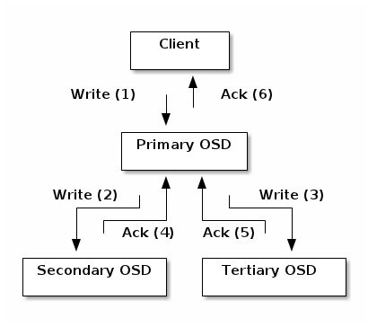

- PG通过CRUSH先分配于OSD，对象通过hash定位PG直接找到OSD
- 通过引入CRUSH算法，将数据分布的查询操作变成了计算操作，并且是在client端完成。
- CRUSH的作用就是，根据pgid得到一个OSD列表。
- 封装在librados中的CRUSH算法使用crush map选择合适的OSD进行操作。
RADOS的对象寻址
Ceph 存储集群从 Ceph 客户端接收数据 —— 不管是来自 Ceph 块设备、 Ceph 对象存储、 Ceph 文件系统、还是基于 librados 的自定义实现 —— 并存储为对象。每个对象是文件系统中的一个文件，它们存储在 对象存储设备上。由 Ceph OSD 守护进程处理存储设备上的读 / 写操作。
在传统架构里，客户端与一个中心化的组件通信（如网关、中间件、 API 、前端等等），它作为一个复杂子系统的唯一入口，它引入单故障点的同时，也限制了性能和伸缩性（就是说如果中心化组件挂了，整个系统就挂了）。
Ceph 消除了集中网关，允许客户端直接和 Ceph OSD 守护进程通讯。 Ceph OSD 守护进程自动在其它 Ceph 节点上创建对象副本来确保数据安全和高可用性；为保证高可用性，监视器也实现了集群化。为消除中心节点， Ceph 使用了 CRUSH 算法。

File —— 此处的 file 就是用户需要存储或者访问的文件。当用户要将数据存储到 Ceph 集群时，存储数据都会被分割成多个 object。（client分割）
Ojbect —— 每个 object 都有一个 object id，每个 object 的大小是可以设置的，默认是 4MB，object 可以看成是 Ceph 存储的最小存储单元。
PG（Placement Group）—— 顾名思义，PG 的用途是对 object 的存储进行组织和位置映射。由于 object 的数量很多，所以 Ceph 引入了 PG 的概念用于管理 object，每个 object 最后都会通过 hash 计算映射到某个 pg 中，一个 pg 可以包含多个 object。
OSD —— 即 object storage device，PG 需要通过 CRUSH 计算映射到 osd 中去存储，如果是二副本的，则每个 pg 都会映射到二个 osd，比如 [osd.1,osd.2]，那么 osd.1 是存放该 pg 的主副本，osd.2 是存放该 pg 的从副本，保证了数据的冗余。
- osd上实际是把底层的disk进行了格式化操作，一般部署工具会将它格式化为xfs文件系统。
File -> object 映射
将用户要操作的file，映射为RADOS能够处理的object。
- 本质上就是按照 object 的最大 size 对 file 进行切分，相当于 RAID 中的条带化过程。这种切分的好处有二：
- 一是让大小不限的 file 变成最大 size 一致、可以被 RADOS 高效管理的 object；
- 二是让对单一 file 实施的串行处理变为对多个 object 实施的并行化处理。
- 本质上就是按照 object 的最大 size 对 file 进行切分，相当于 RAID 中的条带化过程。这种切分的好处有二：
每一个切分后产生的 object 将获得唯一的 oid，即 object id。其产生方式也是线性映射，极其简单。图中，ino 是待操作 file 的元数据，可以简单理解为该 file 的唯一 id。ono 则是由该 file 切分产生的某个 object 的序号。而 oid 就是将这个序号简单连缀在该 file id 之后得到的。举例而言，如果一个 id 为 filename 的 file 被切分成了三个 object，则其 object 序号依次为 0、1 和 2，而最终得到的 oid 就依次为 filename0、filename1 和 filename2。
这里隐含的问题是，ino 的唯一性必须得到保证，否则后续映射无法正确进行。
Object -> PG映射
在 file 被映射为一个或多个 object 之后，就需要将每个 object 独立地映射到一个 PG 中去。这个映射过程也很简单，如图中所示，其计算公式是：
- hash(oid) & mask -> pgid
由此可见，其计算由两步组成。首先是使用 Ceph 系统指定的一个静态哈希函数计算 oid 的哈希值，将 oid 映射成为一个近似均匀分布的伪随机值。然后，将这个伪随机值和 mask 按位相与，得到最终的 PG 序号（pgid）。根据 RADOS 的设计，给定 PG 的总数为 m（m 应该为 2 的整数幂），则 mask 的值为 m-1。因此，哈希值计算和按位与操作的整体结果事实上是从所有 m 个 PG 中近似均匀地随机选择一个。基于这一机制，当有大量 object 和大量 PG 时，RADOS 能够保证 object 和 PG 之间的近似均匀映射。又因为 object 是由 file 切分而来，大部分 object 的 size 相同，因而，这一映射最终保证了，各个 PG 中存储的 object 的总数据量近似均匀。
从介绍不难看出，这里反复强调了 “大量”。只有当 object 和 PG 的数量较多时，这种伪随机关系的近似均匀性才能成立，Ceph 的数据存储均匀性才有保证。为保证 “大量” 的成立，一方面，object 的最大 size 应该被合理配置，以使得同样数量的 file 能够被切分成更多的 object；另一方面，Ceph 也推荐 PG 总数应该为 OSD 总数的数百倍，以保证有足够数量的 PG 可供映射。
PG -> OSD映射
- 第三次映射就是将作为 object 的逻辑组织单元的 PG 映射到数据的实际存储单元 OSD。如图所示，RADOS 采用一个名为 CRUSH 的算法，将 pgid 代入其中，然后得到一组共 n 个 OSD。这 n 个 OSD 即共同负责存储和维护一个 PG 中的所有 object。前已述及，n 的数值可以根据实际应用中对于可靠性的需求而配置，在生产环境下通常为 3。具体到每个 OSD，则由其上运行的 OSD deamon 负责执行映射到本地的 object 在本地文件系统中的存储、访问、元数据维护等操作。
Ceph 通过三次映射，完成了从 file 到 object、PG 和 OSD 整个映射过程。通观整个过程，可以看到，这里没有任何的全局性查表操作需求。
数据的操作流程
以file 写入过程为例，对数据操作流程进行说明
首先，假定待写入的file较小，无需切分，仅被映射为一个object，其次假定系统中一个PG被映射到3个OSD上。
流程如下：
当某个client需要向Ceph 集群写入一个file时，首先需要在本地完成上面叙述的寻址流程，将file变成一个object，然后找出存储该object的一组三个osd。这三个OSD具有各自不同的序号，序号最靠前的那个OSD就时这组中的Primary OSD,而后两个则依次是 Secondary OSD 和 Tertiary OSD。
找到三个OSD后，client将直接和Primary OSD通信，发起写入操作（步骤1）。Primary OSD 收到请求后，分别向 Secondary OSD 和 Tertiary OSD 发起写入操作（步骤 2、3）。当 Secondary OSD 和 Tertiary OSD 各自完成写入操作后，将分别向 Primary OSD 发送确认信息（步骤 4、5）。当 Primary OSD 确信其他两个 OSD 的写入完成后，则自己也完成数据写入，并向 client 确认 object 写入操作完成（步骤 6）。
之所以采用这样的写入流程，本质上是为了保证写入过程中的可靠性，尽可能避免造成数据丢失。同时，由于 client 只需要向 Primary OSD 发送数据，因此，在 Internet 使用场景下的外网带宽和整体访问延迟又得到了一定程度的优化。
当然，这种可靠性机制必然导致较长的延迟，特别是，如果等到所有的 OSD 都将数据写入磁盘后再向 client 发送确认信号，则整体延迟可能难以忍受。因此，Ceph 可以分两次向 client 进行确认。当各个 OSD 都将数据写入内存缓冲区后，就先向 client 发送一次确认，此时 client 即可以向下执行。待各个 OSD 都将数据写入磁盘后，会向 client 发送一个最终确认信号，此时 client 可以根据需要删除本地数据。
分析上述流程可以看出，在正常情况下，client 可以独立完成 OSD 寻址操作，而不必依赖于其他系统模块。因此，大量的 client 可以同时和大量的 OSD 进行并行操作。同时，如果一个 file 被切分成多个 object，这多个 object 也可被并行发送至多个 OSD。
从 OSD 的角度来看，由于同一个 OSD 在不同的 PG 中的角色不同，因此，其工作压力也可以被尽可能均匀地分担，从而避免单个 OSD 变成性能瓶颈。
如果需要读取数据，client 只需完成同样的寻址过程，并直接和 Primary OSD 联系。
集群维护
- 整个Ceph集群中所有的OSD状态的发现和记录由若干个monitor共同负责。并记录共同形成cluster map的master版本，然后发送到 全体OSD和client。osd使用cluster map进行数据的维护，而client使用cluster map进行数据段寻址。
- 在集群中，各个 monitor 的功能总体上是一样的，其相互间的关系可以被简单理解为主从备份关系。monitor 并不主动轮询各个 OSD 的当前状态。正相反，OSD 需要向 monitor 上报状态信息。常见的上报有两种情况：一是新的 OSD 被加入集群，二是某个 OSD 发现自身或者其他 OSD 发生异常。在收到这些上报信息后，monitor 将更新 cluster map 信息并加以扩散。
Cluster map
- Monitor Map: 包含集群的fsid、位置、名字、地址和端口，也包括当前版本、创建实际、最近修改时间。要查看监视器图，用ceph mon dump命令。
- OSD Map: 包含集群fsid、创建时间、最近修改时间、存储池列表、副本数量、归置组数量、OSD 列表及其状态（如 up 、 in ）。要查看 OSD 运行图，用 ceph osd dump 命令。
- OSD 状态的描述分为两个维度：up 或者 down（表明 OSD 是否正常工作），in 或者 out（表明 OSD 是否在至少一个 PG 中）。因此，对于任意一个 OSD，共有四种可能的状态：
- —— Up 且 in：说明该 OSD 正常运行，且已经承载至少一个 PG 的数据。这是一个 OSD 的标准工作状态；
- —— Up 且 out：说明该 OSD 正常运行，但并未承载任何 PG，其中也没有数据。一个新的 OSD 刚刚被加入 Ceph 集群后，便会处于这一状态。而一个出现故障的 OSD 被修复后，重新加入 Ceph 集群时，也是处于这一状态；
- —— Down 且 in：说明该 OSD 发生异常，但仍然承载着至少一个 PG，其中仍然存储着数据。这种状态下的 OSD 刚刚被发现存在异常，可能仍能恢复正常，也可能会彻底无法工作；
- —— Down 且 out：说明该 OSD 已经彻底发生故障，且已经不再承载任何 PG。
- PG Map：包含归置组版本、其时间戳、最新的 OSD 运行图版本、占满率、以及各归置组详情，像归置组 ID 、 up set 、 acting set 、 PG 状态（如 active+clean ），和各存储池的数据使用情况统计。
- CRUSH Map： 包含存储设备列表、故障域树状结构（如设备、主机、机架、行、房间、等等）、和存储数据时如何利用此树状结构的规则。要查看 CRUSH 规则，执行 ceph osd getcrushmap -o {filename} 命令；然后用 crushtool -d {comp-crushmap-filename} -o {decomp-crushmap-filename} 反编译；然后就可以用 cat 或编辑器查看了。
- CRUSH Map： 包含存储设备列表、故障域树状结构（如设备、主机、机架、行、房间、等等）、和存储数据时如何利用此树状结构的规则。要查看 CRUSH 规则，执行 ceph osd getcrushmap -o {filename} 命令；然后用 crushtool -d {comp-crushmap-filename} -o {decomp-crushmap-filename} 反编译；然后就可以用 cat 或编辑器查看了。
OSD增加流程
客户端是如何读取数据的？
- ceph客户端维护object id列表和object存储的pool信息。但是不维护object->osd的映射关系。为了读取数据，客户端需要访问monitor进程获取当前整个集群的cluster map信息。客户端提供object名称和pool名称给librados,librados计算object 所在的pg，根据crush算法在找到主的osd.客户端直接和主osd通信进行读写操作。
转载请注明来源，欢迎对文章中的引用来源进行考证，欢迎指出任何有错误或不够清晰的表达。可以在下面评论区评论，也可以邮件至 1065016533@qq.com